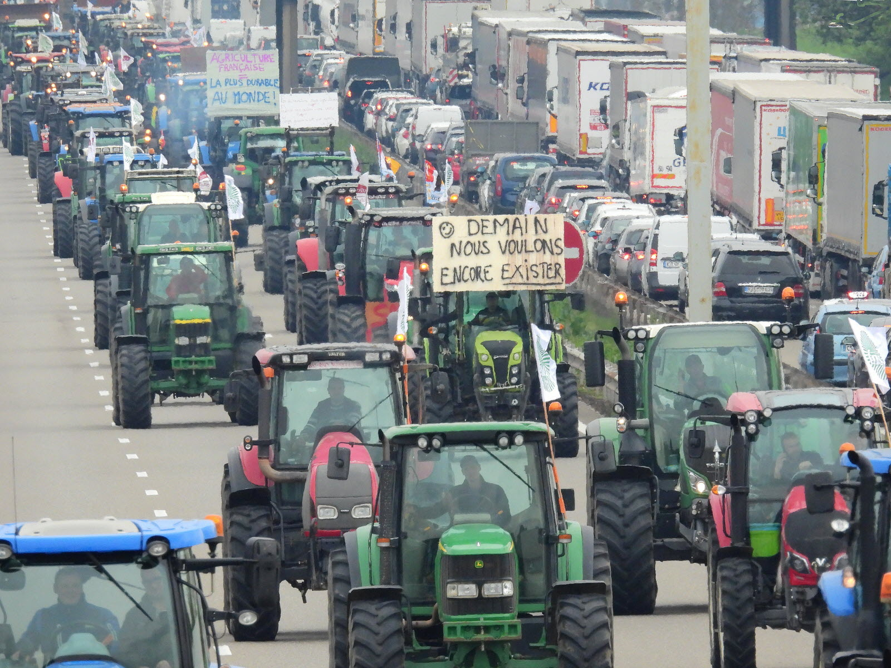

Site officieux de l'APTB - L'Association de protection des tétards
Biterroise
"SAUVONS LES TÉTARDS AVANT QU'IL NE SOIT TROP TARD"

Manifestation contre les pesticides
Aujourd'hui, les courageux membres de notre association ont lutté avec
leur cœur afin d'empêcher les agriculteurs de déverser d'avantage de
pesticides en amont de la rivière où nos chères grenouilles se
reproduisent on voit ici notre cher Dédé (Didier), président de
l'association, envoyer un message fort qui ne restera dans les
mémoires de personne.
Communion sacrée du tétard
Vous le savez tous, afin de fêter la fin de ces périodes de vacances
et ce début de saison de reproduction pour nos chers tétards, la
cérémonie annuelle de la communion tétarienne débute et avec, toutes
les festivitées que vous attendiez tous ! Rejoignez nous nombreux,
l'année dernière, nous étions 3 et cette année, on espère exploser
tout les records avec la présence d'au moins 5 personnes.
Rejoignez-nous !
Acceuil des nouveaux membres
Aujourd'hui, nous avons le grand plaisir d'annoncer que Gertrude est
officiellement un membre à part entière de notre équipe, et elle
rejoindra Dédé (Didier) le président ainsi que sa femme Pétroline
(Secrétaire générale de l'association) dans la gestion de notre
organisation ! Et vous, que pensez vous de cette excellente addition à
nôtre équipe ?